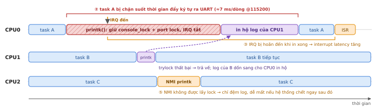
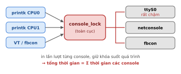
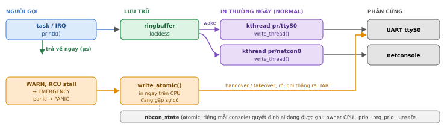
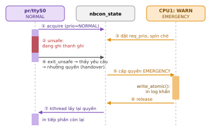

NBCON: console không chặn trong Linux printk¶
Cơ chế console cũ của printk() gây trễ hệ thống, mất log khi sự cố và từng chặn PREEMPT_RT vào mainline. Bài này phân tích sáu giới hạn đó và cách NBCON giải quyết.
Phần 1. Khi lời nhắn của kernel trở thành nút thắt: sáu giới hạn của cơ chế console cũ¶
Suốt hơn hai thập kỷ, printk() là công cụ chẩn đoán quen thuộc nhất của kernel. Nhưng chính cách nó đưa log ra console lại gây trễ hệ thống, mất log khi sự cố xảy ra và chặn PREEMPT_RT vào mainline trong nhiều năm. Phần này phân tích các giới hạn đó và lý do cộng đồng phải thiết kế lại thành NBCON.

Hình 1. Dòng thời gian của một lần printk() với console kiểu cũ. CPU giành được console_lock phải tự in log của mình lẫn log của CPU khác, trong khi ngắt bị tắt. Các số ②③⑤ tương ứng với các mục bên dưới.
Về nguyên tắc, printk() chỉ làm hai việc: ghi message vào ringbuffer của kernel, rồi đưa nó ra các console như cổng serial, netconsole hay màn hình framebuffer. Vấn đề nằm ở bước thứ hai. Trong thiết kế cũ, mọi console dùng chung một khóa toàn cục là console_lock, và CPU nào giành được khóa này sẽ chịu trách nhiệm in toàn bộ log đang chờ, ngay trong ngữ cảnh của nó.
① Một khóa cho tất cả¶
Vì mọi console bị tuần tự hóa sau cùng một khóa, console chậm nhất, thường là UART ở 115200 baud, quyết định tốc độ của cả hệ thống log. Khóa này còn được VT và fbcon dùng cho những việc không liên quan đến in log, nên printk() phải tranh chấp với cả các thao tác đó.

Hình 2. Mọi nguồn log cùng đi qua một khóa duy nhất trước khi tới console.
② Người gọi phải in, và in hộ người khác¶
Khi CPU khác gọi printk() mà không lấy được khóa, message của nó được dồn cho CPU đang giữ khóa in hộ. Cơ chế chuyển giao console_owner (từ 4.16) giúp san sẻ gánh nặng, nhưng không đặt được giới hạn trên. Trên máy nhiều nhân với log dồn dập, một CPU có thể bị kẹt in đủ lâu để gây soft lockup hay RCU stall, tức chính printk() sinh ra sự cố.
③ Ngắt bị tắt trong lúc ghi¶
Driver UART thường giữ port spinlock với irqsave khi đẩy từng ký tự ra thanh ghi truyền. Toàn bộ thời gian đó ngắt trên CPU bị hoãn, đúng vào lúc hệ thống đang có điều bất thường cần ghi log.
Con số: một dòng log tốn bao lâu?
Một dòng 80 ký tự, khung 8N1 (10 bit/ký tự), CPU chờ đến khi ký tự cuối rời UART:
| Baud rate | Thời gian/dòng | 50 dòng lúc boot lỗi |
|---|---|---|
| 9 600 | 83,3 ms | 4,2 s |
| 115 200 | 6,9 ms | 347 ms |
| 921 600 | 0,87 ms | 43 ms |
Với một hệ RT có ngân sách latency cỡ chục µs, ngay cả mức 921 600 baud cũng lớn hơn ngân sách hàng chục lần. (Tính từ baud rate, chưa gồm overhead của driver.)
④ Xung đột với PREEMPT_RT¶
Trên kernel RT, spinlock thông thường trở thành khóa có thể ngủ, nên không thể in từ ngữ cảnh atomic theo cách cũ. Thời gian in lại không có giới hạn trên, phá vỡ đúng đảm bảo mà RT hứa hẹn. Đây là lý do printk là trở ngại cuối cùng khiến PREEMPT_RT phải nằm ngoài mainline suốt nhiều năm.
⑤ Mù mờ lúc hệ thống sụp đổ¶
Trong NMI, kernel không được phép chờ khóa nên chỉ có thể đệm log. Khi panic, kernel phải bỏ qua khóa bằng console_flush_on_panic(), chấp nhận output lẫn lộn, hoặc treo nếu CPU khác đang giữ port lock. Log quan trọng nhất có thể không bao giờ được in.
⑥ Deadlock và những miếng vá chồng chất¶
Gọi printk() khi đang giữ khóa của scheduler, hay từ chính driver UART, có thể gây deadlock hoặc đệ quy. Kernel phải bổ sung các cơ chế đặc biệt như printk_deferred() và printk_safe, khiến mã ngày càng phức tạp. Thêm vào đó, khi console không theo kịp, ringbuffer bị ghi đè và log biến mất kèm thông báo “messages dropped”.
Phần 2. Bên trong NBCON: khi printk() không còn chặn ai¶
Thay vì một khóa toàn cục, NBCON trao cho mỗi console một “chìa khóa” riêng có gắn mức ưu tiên. Việc in thường ngày được giao cho kthread, còn những lúc nguy cấp, kernel vẫn in được ngay lập tức, kể cả trong NMI và panic. Đây là mảnh ghép cuối cùng đưa PREEMPT_RT vào mainline.

Hình 3. Hai đường in của NBCON. Đường thường ngày (tím) chạy trong kthread riêng của từng console; đường khẩn cấp (cam) in đồng bộ bằng write_atomic(). Cả hai cùng xin quyền qua nbcon_state của console đó.
Ý tưởng cốt lõi của NBCON (non-BKL console) là tách hai việc mà cơ chế cũ gộp làm một: lưu message và in message. printk() giờ chỉ ghi vào ringbuffer lockless rồi trả về. Việc in được giao cho một kthread riêng của từng console, chạy với nice −20, nên console chậm không còn kéo chậm console khác, càng không kéo chậm người gọi.
Quyền sở hữu có ưu tiên¶
Mỗi console có một biến nbcon_state cập nhật bằng thao tác atomic, ghi CPU nào đang sở hữu và ở mức ưu tiên nào: NORMAL cho in thường ngày, EMERGENCY cho WARN, lockdep hay RCU stall, và PANIC cho CPU đang panic. Ngữ cảnh ưu tiên cao có ba cách giành quyền:
- lấy trực tiếp nếu console đang rảnh;
- yêu cầu handover để chủ hiện tại nhường ở điểm an toàn kế tiếp;
- chỉ khi panic, hostile takeover giành quyền bất chấp.

Hình 4. Handover: chủ cũ không bị cắt ngang giữa lúc đang ghi thanh ghi (vùng đỏ) mà nhường quyền ở điểm an toàn kế tiếp.
Vùng “unsafe” và điểm an toàn¶
Driver tự đánh dấu những đoạn không được phép bị cắt ngang, chẳng hạn khi đang đổi thanh ghi IER của UART, bằng cặp nbcon_enter_unsafe() / nbcon_exit_unsafe(). Ra khỏi vùng unsafe là một điểm an toàn: nếu có yêu cầu handover, quyền được nhường tại đây. Khi panic và chủ cũ không phản hồi kịp, CPU panic có thể takeover và đánh dấu unsafe_takeover, chấp nhận rủi ro output lỗi để vẫn có log.
Khi nào in đồng bộ?¶
Kthread chỉ đảm nhận việc in khi hệ thống chạy bình thường. Ở giai đoạn boot sớm khi kthread chưa sẵn sàng, trong vùng emergency, khi panic và lúc shutdown hay reboot, NBCON chuyển sang in đồng bộ bằng write_atomic() để không mất log.
Driver cần làm gì¶
Một console muốn trở thành NBCON phải bật cờ CON_NBCON và cung cấp bốn callback:
static struct console my_console = {
.write_atomic = my_write_atomic, /* mọi ngữ cảnh, cả NMI */
.write_thread = my_write_thread, /* chỉ từ kthread in */
.device_lock = my_device_lock, /* thường là uart port lock */
.device_unlock = my_device_unlock,
.flags = CON_PRINTBUFFER | CON_NBCON,
};
Bên trong, driver ghi từ wctxt->outbuf và kiểm tra giá trị trả về của các hàm unsafe: false nghĩa là đã mất quyền, phải dừng ngay. Console không an toàn trong mọi ngữ cảnh atomic, như netconsole, đặt thêm CON_NBCON_ATOMIC_UNSAFE để write_atomic() chỉ được dùng khi khẩn cấp.
So sánh nhanh hai cơ chế¶
| Legacy | NBCON | |
|---|---|---|
| Đồng bộ hóa | 1 khóa toàn cục | quyền riêng từng console |
| Ai in? | caller giữ khóa | kthread pr/* |
printk() trả về |
sau khi in (ms) | ngay (µs) |
| IRQ khi in thường | tắt | bật (chạy trong kthread) |
| NMI / panic | đệm / phá khóa | write_atomic() có ưu tiên |
| PREEMPT_RT | không tương thích | tương thích |
Mốc đưa vào mainline¶
| Phiên bản | Nội dung |
|---|---|
| 6.7 (1/2024) | Nền tảng ownership/priority (nbcon_state, handover/takeover, unsafe section) |
| 6.12 (11/2024) | Threaded & atomic printing; PREEMPT_RT vào mainline |
| 2025–2026 | Driver chuyển đổi: imx, amba-pl011, netconsole; 8250 “take 2” dự kiến ~7.3 |
Kiểm tra trên board
cat /proc/consoles: console NBCON có cờ N.ps -eo pid,ni,comm | grep pr/: thấy kthread in của từng console.
Lưu ý cho gNodeB
Affine kthread pr/* ra khỏi các core isolated của L1/fronthaul. Log EMERGENCY và panic vẫn in đồng bộ ngay trên CPU gặp sự cố, nên cần giữ WARN ngoài đường nóng. UART LX2160A tương thích 16550 (driver 8250); với ZynqMP cần kiểm tra driver xilinx_uartps đã hỗ trợ NBCON hay chưa.
Tham khảo¶
- “[GIT PULL] printk for 6.7”, LKML, 11/2023
- J. Ogness, “[PATCH printk v5 0/8] provide nbcon base”, LKML, 9/2023
- J. Ogness, “[PATCH tty v11 0/2] Convert 8250 to NBCON, take 2”, LKML, 7/2026
- “netconsole: convert to NBCON console infrastructure”, net tree, 2026
- The Good Penguin, “The Impact of Non-Blocking Consoles (nbcon) on Linux Boot Time”, 2025